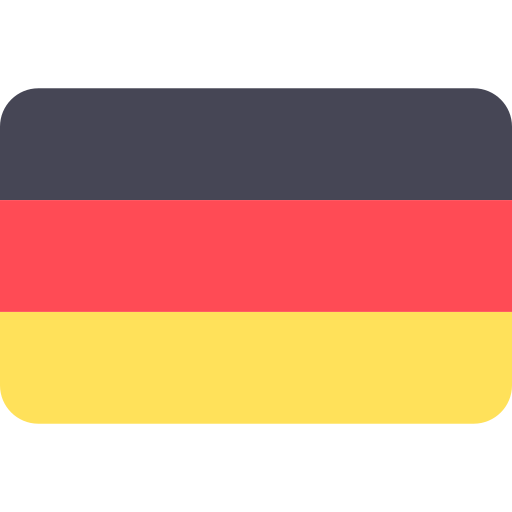

Dow Jones Average (in USD)
{%for item, values in dowjones.items %}
Open: {{ values.OP }}
Volume: {{ values.VL }}
Average Volume: {{ values.AVGVL }}
{%endfor%}
{{values.RTF }}
{{ values.FC }}
Previous Close: {{ values.PC }}Open: {{ values.OP }}
Volume: {{ values.VL }}
Average Volume: {{ values.AVGVL }}
{%endfor%}
Heng Seng Index (in HKD)
{% for item, values in hengseng.items %}
Open: {{ values.OP }}
Volume: {{ values.VL }}
Average Volume: {{ values.AVGVL }}
{%endfor%}
{{values.RTF }}
{{ values.FC }}
Previous Close: {{ values.PC }}Open: {{ values.OP }}
Volume: {{ values.VL }}
Average Volume: {{ values.AVGVL }}
{%endfor%}
FTSE Index (in Pounds)
 {%for item, values in london.items %}
{%for item, values in london.items %}
{{values.RTF }}
{{ values.FC }}
Previous Close: {{ values.PC }}Open: {{ values.OP }}
Volume: {{ values.VL }}
Average Volume: {{ values.AVGVL }}
{%endfor%}
Commodities
Futures
NASDAQ COMPOSITE Futures
Last Price: {{ futures.1.DWJ }}FTSE 100 Futures
Last Price: {{ futures.1.UK }}HANG SENG Futures
Last Price: {{ futures.1.HSI }}

DAX Futures
Last Price: {{ futures.1.DAX }}SGX NIFTY Futures
Last Price: {{ futures.1.SG }}
NIKKEI 225 Futures
Last Price: {{ futures.1.JAP }}EURO STOXX 50 Futures
Last Price: {{ futures.1.EU }}SHANGHAI COMPOSITE
Last Price: {{ futures.1.SH }}SHENZHEN COMPONENT
Last Price: {{ futures.1.SZ }}USD-HKD
Last Price: {{ currency.1.USD.0 }}Change: {{ currency.1.USD.1 }}
YEN-HKD
Last Price: {{ currency.1.JPY.0 }}Change: {{ currency.1.JPY.1 }}
POUNDS-HKD
Last Price: {{ currency.1.GBP.0 }}Change: {{ currency.1.GBP.1 }}
EURO-HKD
Last Price: {{ currency.1.EUR.0 }}Change: {{ currency.1.EUR.1 }}
NTD-HKD
Last Price: {{ currency.1.NTD.0 }}Change: {{ currency.1.NTD.1 }}
RMB-HKD
Last Price: {{ currency.1.RMB.0 }}Change: {{ currency.1.RMB.1 }}